FLIER-2 "Flier Studio follow-ups": the All fliers card in sections
Live build 00f0f12 with each mockup applied to the live page. Galaxy S5 360x640 and Desktop Chrome 1280x800, light and dark, clock frozen at 2026-10-28 15:00Z, same steps for before and after (frames/*.json). Initial focus does not change: the Title field at 1280, none at 360 (main.ts:189). In B, opening a row moves focus to its picker.
All three options also fix Drafts being unreachable at desktop. Before: the previews column scrolls inside itself (768 px), so page scroll never reaches Drafts. Scrolling the page to it leaves it off screen (frames/before-1280-light-drafts.json). After: Drafts is on screen in A, B and C.
A · Three titled sections in the card
Inventory: 13/13 · aligned: pass (0 side-by-side pairs off by more than 1px, 4 frames) · text fit: pass · card height 208 px at 1280 (before 264 + the Download row), 466 px at 360 (before 368 + 60)
One card, three side-by-side sections at 1280 (Theme | Shared text edits | Fliers), stacked at 360. The small caps section headings replace the field labels, so there are fewer labels. Download all moves onto the card heading line, so it stays visible when the card is folded.
Drafts: At 1280 or wider the previews column stops scrolling inside itself, so page scroll reaches Drafts.
All fliers card, 1280 and 360
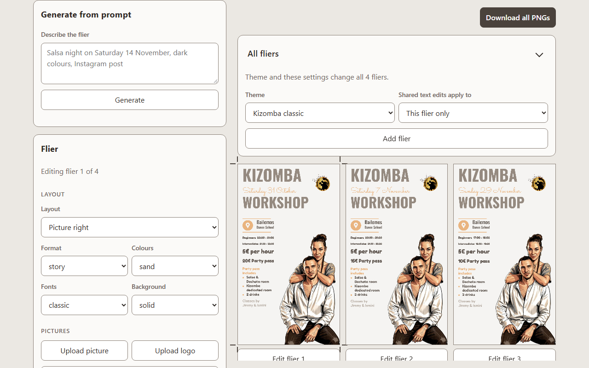
Before, 1280 light
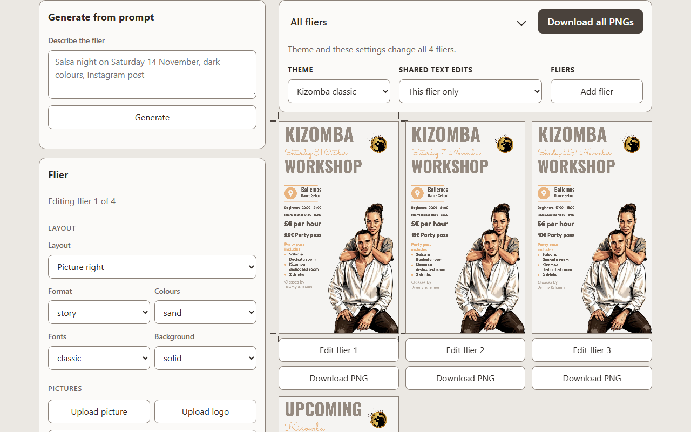
After A, 1280 light
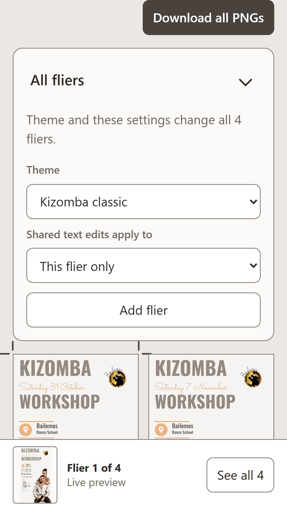
Before, 360 light
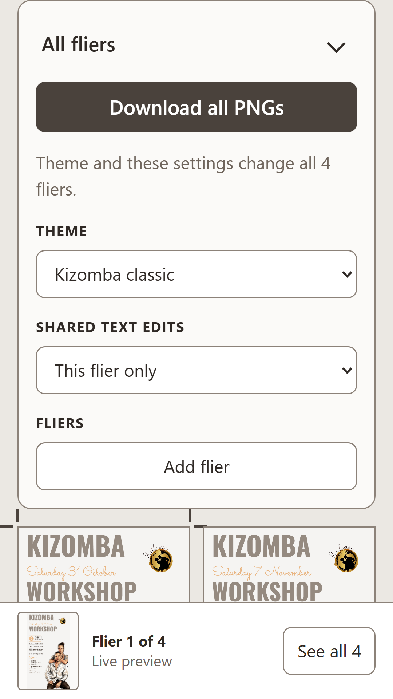
After A, 360 light
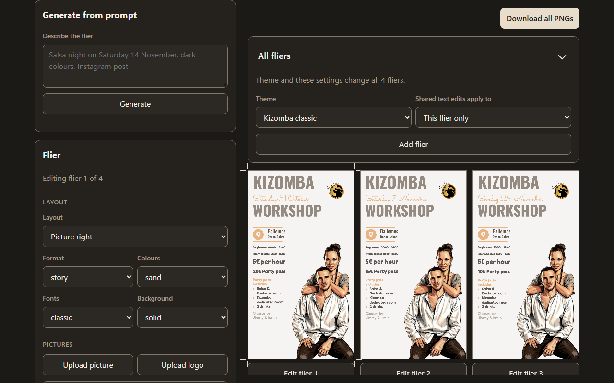
Before, 1280 dark
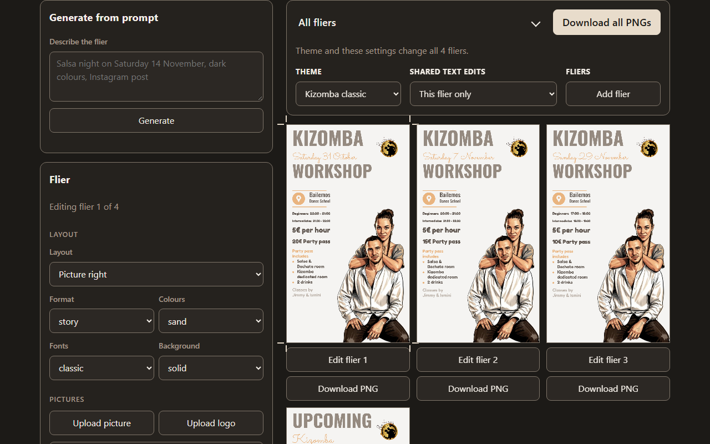
After A, 1280 dark
Page scrolled to Drafts, 1280
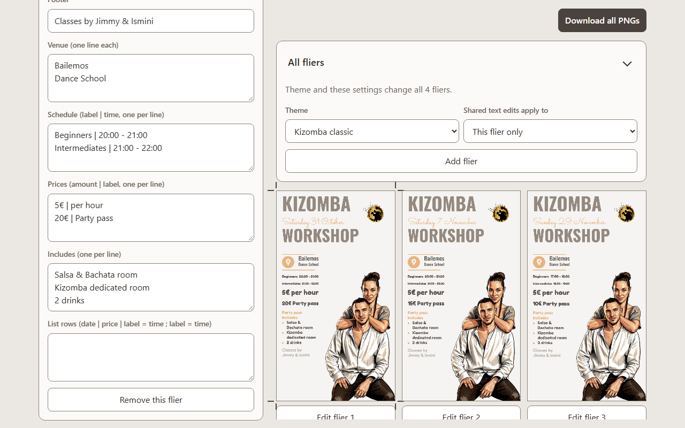
Before, 1280 lightAfter A, 1280 light
B · Settings list, each row opens
Inventory: 13/13 · aligned: pass (0 side-by-side pairs off by more than 1px, 4 frames) · text fit: pass · card height 303 px at 1280, 385 px at 360
Each setting is one 48 px row that shows its current value ("Theme Kizomba classic"), like iOS Settings. Tapping a row opens its picker under it. Add flier sits below. Download all is on the heading line.
Drafts: At 1280 or wider, the Drafts card moves to the bottom of the left controls column, where it is seen without the inner scroll.
All fliers card, 1280 and 360
Before, 1280 light
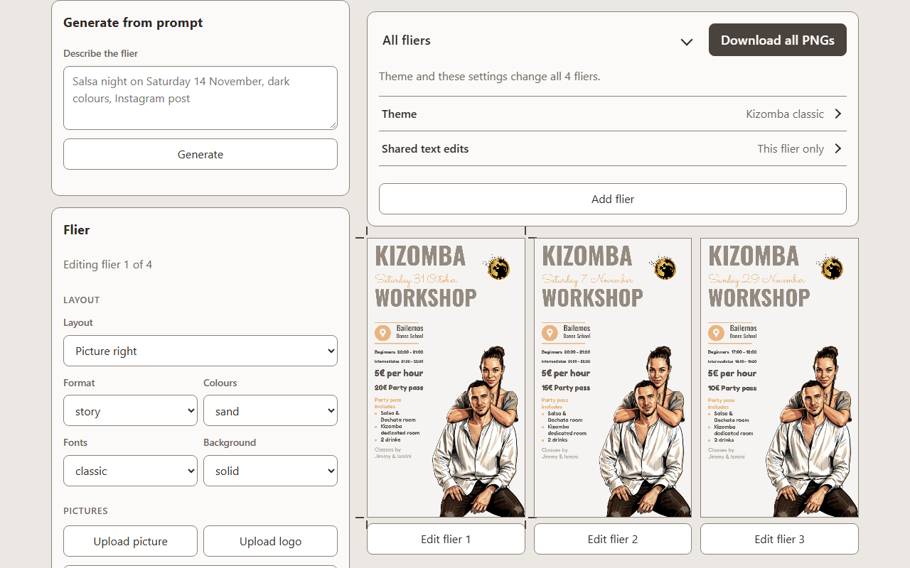
After B, 1280 light
Before, 360 light
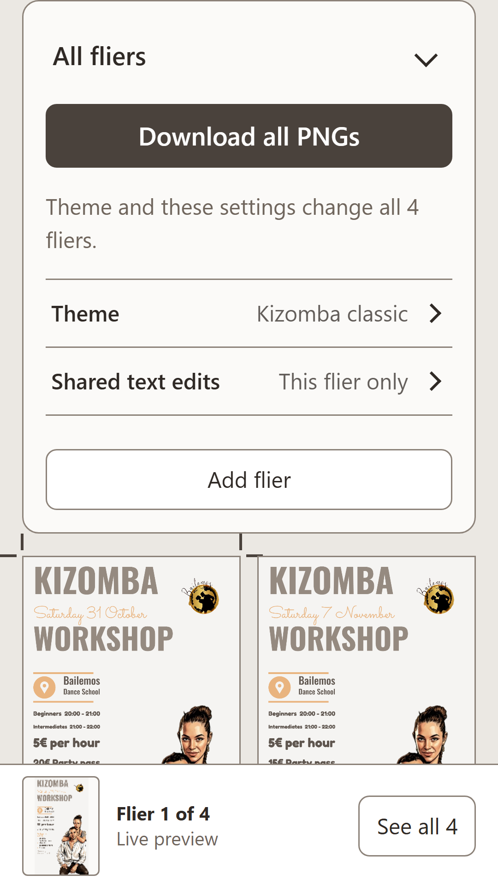
After B, 360 light
Before, 1280 dark
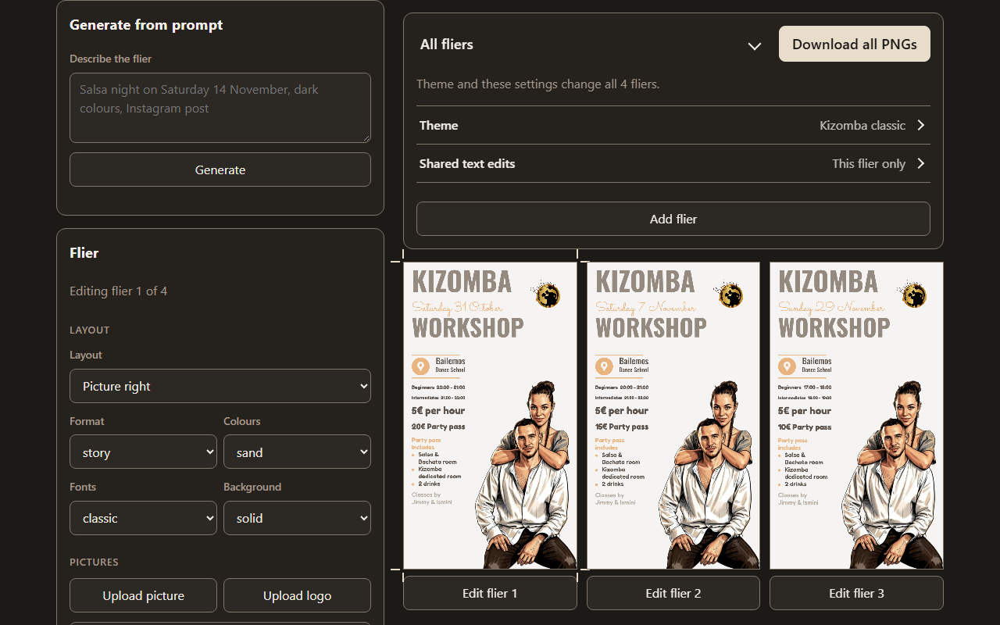
After B, 1280 dark
Page scrolled to Drafts, 1280
Before, 1280 light
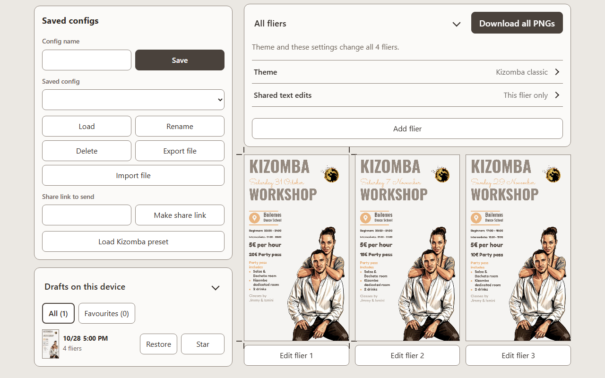
After B, 1280 light
C · One toolbar strip
Inventory: 13/13 · aligned: pass (0 side-by-side pairs off by more than 1px, 4 frames) · text fit: pass · card height 204 px at 1280, 449 px at 360
No section headings. At 1280 the card is one strip, Theme | Shared text edits | Add flier, split by thin rules. At 360 the strip stacks with hairlines. The note moves under the strip, and the labels keep their current wording.
Drafts: Same as A: the previews column no longer scrolls inside itself, so page scroll reaches Drafts.
All fliers card, 1280 and 360
Before, 1280 light
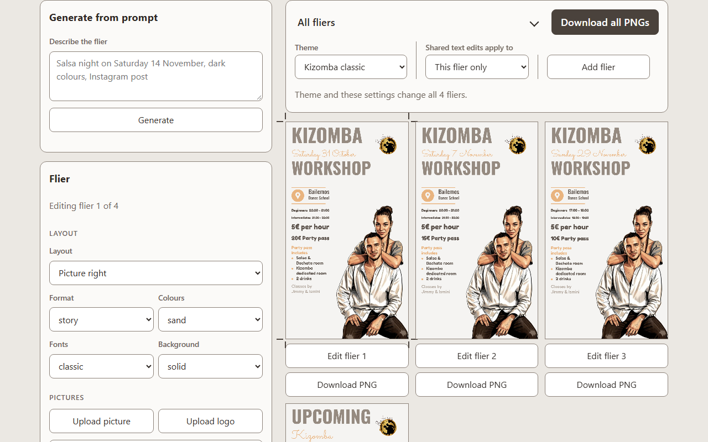
After C, 1280 light
Before, 360 light
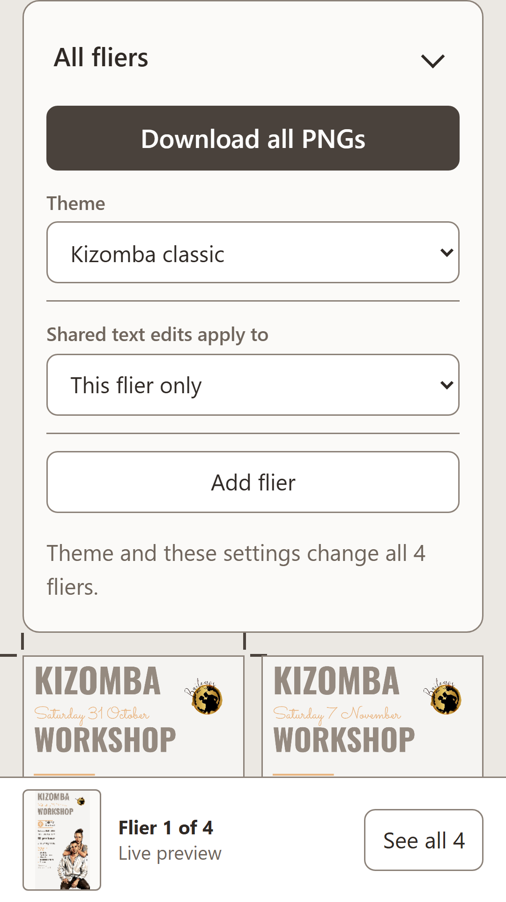
After C, 360 light
Before, 1280 dark
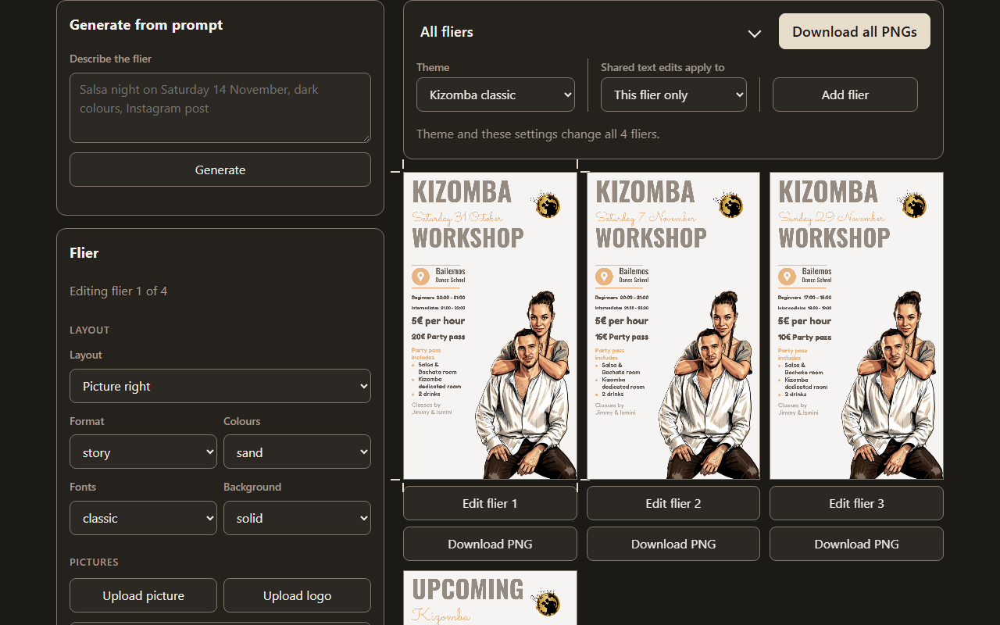
After C, 1280 dark
Page scrolled to Drafts, 1280
Before, 1280 light
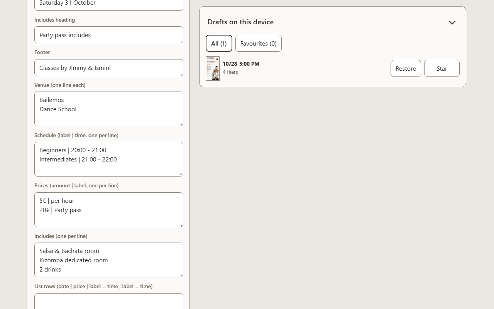
After C, 1280 light
Information inventory (role Visitor, All fliers card)
#
Item
Source
A
B
C
1
All fliers card all-fliers
src/ui/allFliersPanel.ts:26
kept
kept
kept
2
Fold toggle, aria-expanded, remembered per viewer all-fliers-toggle
src/ui/collapsible.ts:38-49
kept
kept
kept
3
Fold hint (aria-description)
src/ui/collapsible.ts:38
kept
kept
kept
4
Note "Theme and these settings change all n fliers."
src/ui/allFliersPanel.ts:25,33
kept
kept
kept (under the strip)
5
Theme label theme-row
src/ui/themeControls.ts:52
moved to section heading THEME (label stays the accessible name)
moved to row title "Theme"
kept
6
Theme picker pick-theme (2 themes)
src/ui/themeControls.ts:48
kept
moved to row Theme › picker (value shown on the row)
kept
7
Label "Shared text edits apply to"
src/ui/allFliersPanel.ts:28
moved to heading SHARED TEXT EDITS (full label = accessible name)
moved to row title "Shared text edits"
kept
8
Scope picker pick-scope (This flier only / All fliers (footer, level names, class price))
src/ui/allFliersPanel.ts:21-24
kept
moved to row Shared text edits › picker
kept
9
Row container all-fliers-row
src/ui/allFliersPanel.ts:28
kept (section grid)
kept (list)
kept (strip)
10
Add flier add-flier
src/ui/allFliersPanel.ts:29
moved to section FLIERS
kept
kept
11
Download all PNGs download-all (row above the card)
src/main.ts:182
moved to the card heading line
moved to the card heading line
moved to the card heading line
12
Folded state (body hidden)
src/ui/collapsible.ts:41-43
kept; Download all stays visible when folded
kept; same
kept; same
13
Drafts card reachable at desktop drafts-panel
src/main.ts:186, src/ui/styles.css:147
moved to page scroll (inner scroller removed)
moved to the bottom of the controls column at 900 px or wider
moved to page scroll (inner scroller removed)
Q1 How should the All fliers card be split into sections?
AThree titled sections side by side (Theme, Shared text edits, Fliers)
BSettings list: one row per setting showing its value, tap to open
COne toolbar strip split by thin rules, labels unchanged
All three keep 13/13, move Download all onto the card heading and make Drafts reachable at desktop. A and B shorten the visible label "Shared text edits apply to" to "Shared text edits"; the full label stays the accessible name.